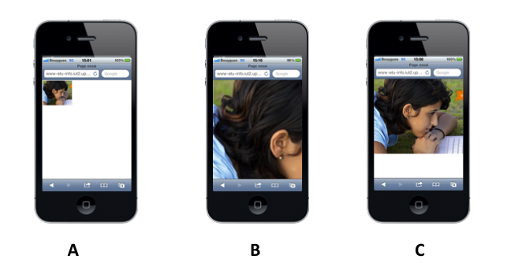
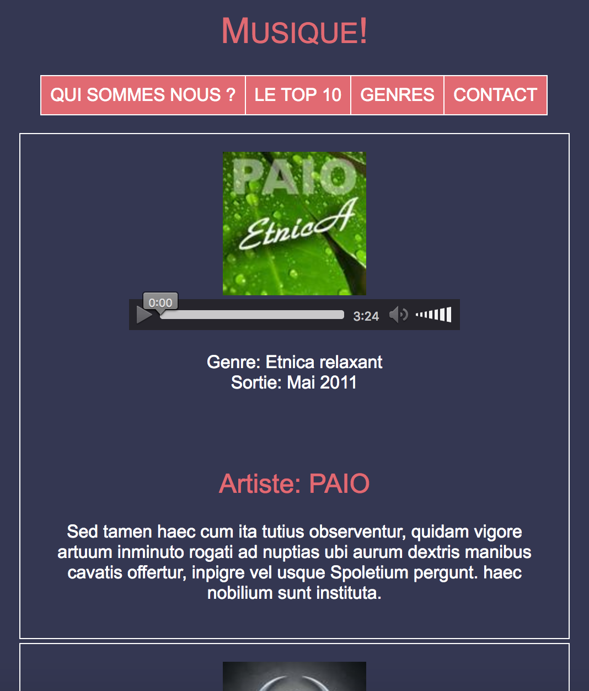
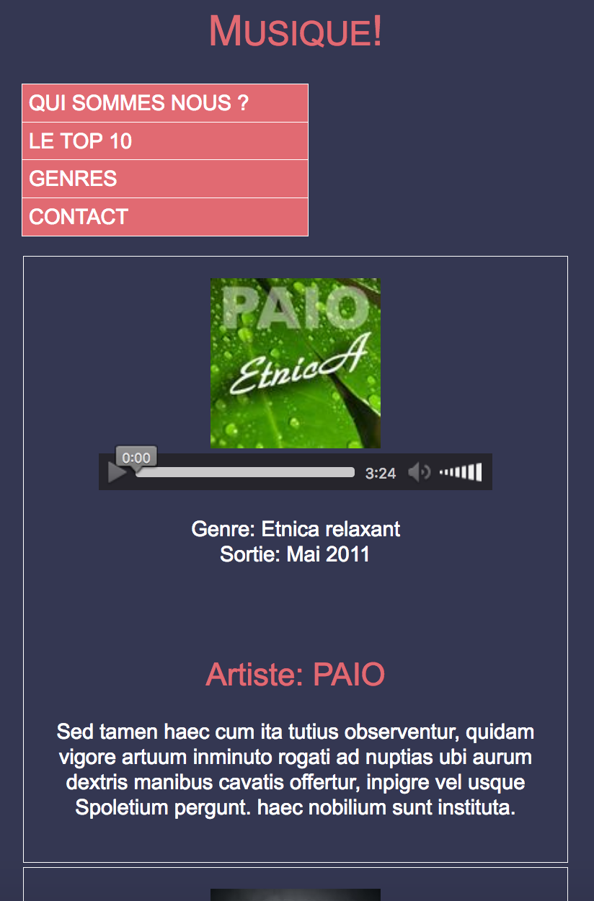

Ce document est consultable sur la plateforme Chamilo du département.
Vous avez vu au TP5 qu'il y avait plusieurs façons de mettre en oeuvre un design. Vous avez expériementé le design fluide (ou encore liquide) et le design statique.
Nous allons voir aujourd'hui le design adaptatif (responsive en anglais).
En effet, savoir concevoir un site web qui s'adapte aux différents terminaux de consultation que sont les smartphones, les tablettes, les écrans d'ordinateurs… est important de nos jours. Le Responsive Web Design (RWD) regroupe différents principes et technologies pour la conception et la réalisation d'un seul site web qui va prendre différentes "formes" selon le terminal de consultation.
En cours, vous avez vu que les notions de résolution native (physique), résolution virtuelle et de viewport sont importantes à comprendre.
Supposons une page web "standard" qui comporte juste une image de 320px de largeur x 269px de hauteur.
Supposons qu'on utilise un smartphone dont les caractéristiques sont les suivantes:
Voici 3 affichages de la même page web qui contient tout simplement l'image précédente.

Vous allez adapter une page qui a été conçue pour un terminal d'ordinateur, donc une fenêtre de navigateur assez grande. Vous allez adopter la méthodologie n°1 vue en cours qui consiste à faire de la dégradation progressive pour adapter cette page à des supports plus petits.
Travail à faire: On vous demande de modifier cette page (ajouter une balise meta dans le code HTML, et ajouter des règles de style "media queries" dans le code CSS) afin d'obtenir les différents affichages ci-dessous, sachant que 2 points de rupture ont été identifiés, à 768px et à 510px :


Si vous avez un smartphone et/ou une tablette, vous pouvez bien sûr tester votre page et vérifier que votre "responsive web design" est bien pris en compte. Pour cela copier vos fichiers dans votre répertoire public_html (ne pas oublier la commande setup-public-html).